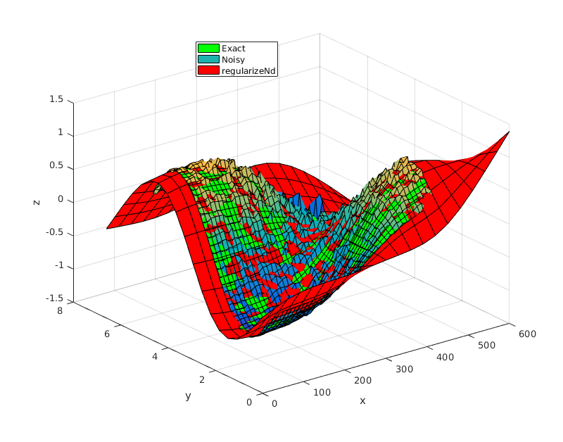

regularizeNd
regularizeNd Fits a nD lookup table with smoothness to scattered data.
yGrid = regularizeNd(x, y, xGrid) yGrid = regularizeNd(x, y, xGrid, smoothness) yGrid = regularizeNd(x, y, xGrid, smoothness, interpMethod) yGrid = regularizeNd(x, y, xGrid, smoothness, interpMethod, solver)
Contents
Inputs
x - column vector or matrix of column vectors, containing scattered data. Each row contains one point. Each column corresponds to a dimension.
y - vector containing the corresponds values to x. y has the same number of rows as x.
xGrid - cell array containing vectors defining the nodes in the grid in each dimension. xGrid{1} corresponds with x(:,1) for instance. Unequal spacing in the grid vectors is allowed. The grid vectors must completely span x. For instance the values of x(:,1) must be within the bounds of xGrid{1}. If xGrid does not span x, an error is thrown.
smoothness - scalar or vector. - The numerical "measure" of what we want to achieve along an axis/dimension, regardless of the resolution, the aspect ratio between axes, or the scale of the overall problem. The ratio of smoothness to fidelity of the output surface, i.e. ratio of smoothness to "goodness of fit." This must be a positive real number. If it is a vector, it must have same number of elements as columns in x.
A smoothness of 1 gives equal weight to fidelity (goodness of fit) and smoothness of the output surface. This results in noticeable smoothing. If your input data has little or no noise, use 0.01 to give smoothness 1% as much weight as goodness of fit. 0.1 applies a little bit of smoothing to the output surface.
If this parameter is a vector, then it defines the relative smoothing to be associated with each axis/dimension. This allows the user to apply a different amount of smoothing in the each axis/dimension.
DEFAULT: 0.01
interpMethod - character, denotes the interpolation scheme used to interpolate the data.
- 'linear' - Uses linear interpolation within the grid. linear interpolation requires that extrema occur at the grid points. linear should be smoother than nearest for the same grid. As the number of dimension grows, the number of grid points used to interpolate at a query point grows with 2^nDimensions. i.e. 2d needs 4 points, 3d needs 8 points, 4d needs 16 points per query point. Linear has good properies of speed and accuracy.
- 'nearest' - nearest neighbor interpolation. Nearest should be the fastest because of simplicity but least accurate.
- 'cubic' - Uses lagrange cubic interpolation. Cubic interpolation allows extrema to occur at other locations besides the grid points. Cubic should provide the most flexible relationship for a given xGrid at the cost of computation time. As the number of dimension grows, the number of grid points used to interpolate at a query point grows with 4^nDimensions. i.e. 2d needs 16 points, 3d needs 64 points, 4d needs 256 points per query point. cubic has good properties of accuracy and smoothness but should be the slowest.
DEFAULT: 'linear'
solver - character flag - denotes the solver used for the resulting linear system. The default is most often the best choice.
What solver should you use? '\' may be best numerically for most smoothness parameters and high extents of extrapolation. If you receive rank deficiency warnings, try the '\' solver. Otherwise, use the 'normal' solver because it is usually faster than the '\' solver.
Large numbers of points will slow down the direct '\'. Since the equations generated by this regularization method tends to be well conditioned, the 'normal' solver is a good choice. Beware using 'normal' when a small smoothing parameter is used, since this will make the equations less well conditioned. The 'normal' solver for fairly large grids is 3x faster than the '\'.
- '\' - uses matlab's backslash operator to solve the sparse system.
- 'normal' - Constructs the normal equation and solves. x = (A'A)\(A'*y). From testing, this seems to be a well conditioned and faster way to solve this type of equation system than backslash x = A\y. Testing shows that the normal equation is 3x faster than the \ solver for this type of problem. This goes against the general recommendation in numerical analysis but is has been proven to be true through testing.
DEFAULT: 'normal'
Output
yGrid - array containing the fitted surface correspond to the grid points xGrid. yGrid is in the ndgrid format. In 2d, ndgrid format is the transpose of meshgrid format.
Description
regularizeNd answers the question what is the best possible lookup table that the scattered data input x and output y in the least squares sense with smoothing? regularizeNd is meant to calculate a smooth lookup table given n-D scattered data. regularizeNd supports extrapolation from a scattered data set as well.
The calculated lookup table yGrid is meant to be used with griddedInterpolant class with the conservative memory form. Call griddedInterpolant like F = griddedInterpolant(xGrid, yGrid).
Desirable properties of regularizeNd:
- Calculates a relationship between the input x and the output y without definition of the functional form of x to y.
- Often the fit is superior to polynomial type fitting without the wiggles.
- Extrapolation is possible from a scattered data set.
- After creating the lookup table yGrid and using it with griddedInterpolant, as the query point moves away from the scattered data, the relationship between the input x and output y becomes more linear because of the smoothness equations and no nearby fidelity equations. The linear relationship is a good choice when the relationship between x and y is unknown in extrapolation.
- regularizeNd can handle 1D, 2D, nD input data to 1D output data. RegularizeData3D and gridfit can only handle 2D input and 1D out (total 3D).
- regularizeNd can handle setting the smoothness to 0 in any axis/dimension. This means no smoothing is applied in a particular axis/dimension and the data is just a least squares fit of a lookup table in that axis/dimension.
For an introduction on how regularization works, start here: https://mathformeremortals.wordpress.com/2013/01/29/introduction-to-regularizing-with-2d-data-part-1-of-3/
Acknowledgement
Special thanks to Peter Goldstein, author of RegularizeData3D, for his coaching and help through writing regularizeNd.
Example
% setup some input points, output points, and noise x = 0.5:0.1:4.5; y = 0.5:0.1:5.5; [xx,yy] = ndgrid(x,y); z = tanh(xx-3).*sin(2*pi/6*yy); noise = (rand(size(xx))-0.5).*xx.*yy/30; zNoise = z + noise; % setup the grid for lookup table xGrid = linspace(0,6,21); yGrid = linspace(0,6.6,19); gridPoints = {xGrid, yGrid}; % setup some difference in scale between the different dimensions/axes to % just show the effectiveness of regularizeNd's capability of handling % different scales in different dimensions. xScale = 100; x = xScale*x; xx=xScale*xx; xGrid = xScale*xGrid; gridPoints{1} = xGrid; % smoothness parameter. i.e. fit is weighted 1000 times greater than % smoothness. smoothness = 0.001; % regularize zGrid = regularizeNd([xx(:), yy(:)], zNoise(:), gridPoints, smoothness); % Note this s the same as % zGrid = regularizeNd([xx(:), yy(:)], zNoise(:), gridPoints, smoothness, 'linear', 'normal'); % create girrdedInterpolant function F = griddedInterpolant(gridPoints, zGrid, 'linear'); % plot and compare screenSize = get(0, 'screenSize'); figure('position', [screenSize(3:4)*.1, 800, 600]); surf(x,y,z', 'FaceColor', 'g') hold all; surf(x,y,zNoise') surf(xGrid, yGrid, zGrid', 'FaceColor', 'r') xlabel('x') ylabel('y') zlabel('z') legend({'Exact', 'Noisy', 'regularizeNd'},'location', 'best');